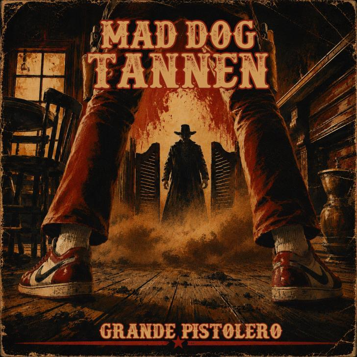

Review
Mad Dog Tannen – Grande Pistolero
Review anhören
Eingesprochen von Chris aus der RandaleROTTE · Text: Burg

Kennt ihr Buford „Mad Dog“ Tannen? Den ziemlich unangenehmen Zeitgenossen aus „Zurück in die Zukunft III“?
Offenbar fanden ein paar Musiker aus NRW den Kerl interessant genug, um gleich ihre Band nach ihm zu benennen.
Mad Dog Tannen entstanden 2017 aus ehemaligen Mitgliedern von Bloodening. Seit 2023 sind sie als Trio unterwegs und haben mir jetzt ihre sieben Songs umfassende EP „Grande Pistolero“ geschickt. Erschienen ist das Ding bereits am 21. August 2026.
Spaghetti-Western trifft auf Hardcore, Metal und Rock ’n’ Roll.
Was für eine bekloppte Idee.
Und was für eine geile Platte!
Da wackelt der Kopf sofort mit. Langsam, aber kraftvoll. Während ich so vor mich hinbange, muss ich unweigerlich an die alten Cro-Mags denken. Keine Gleichsetzung, ihr Banausen. Aber eine gewisse musikalische Verwandtschaft unterstelle ich den Jungs jetzt einfach mal.
Ja, wir sind hier wieder im Hardcore gelandet. Vielleicht liegt es am Wetter. Draußen wird es kälter und grauer, und offenbar brauche ich gerade wieder mehr Musik, die ordentlich auf die Zwölf geht.
„Grande Pistolero“ kommt mit einer herrlich kompromisslosen, schwerfälligen Brutalität daher. Dabei haben die Jungs genügend Ideen eingebaut, damit aus den sieben Songs kein eintöniges Dauergeprügel wird.
Besonders bei „One of Us“ horche ich auf. Da melden sich plötzlich Erinnerungen an alte Metallica-Nummern, gepaart mit einer ordentlichen Portion Faith No More. Nur mit deutlich mehr Brutalität.
Nostalgie-Entenpelle!
Für diese Mischung haben Mad Dog Tannen selbst einen Namen: Mosh’n’Roll. Erklärt mir auch nicht vollständig, warum ich gerade Cro-Mags, Metallica und Faith No More in einem Text unterbringen musste. Aber ihr wisst wenigstens ungefähr, was euch erwartet.
Die Western-Geschichte ist dabei mehr als nur ein alberner Bandname. Sie zieht sich durch das gesamte Konzept, vom Artwork über Samples und musikalische Einflüsse bis zum italienisch gesungenen Titelstück.
Mit „Bear The Blame“ wird es dagegen ziemlich ernst. Laut Band geht es dort um religiöse Heuchelei, Machtmissbrauch und sexualisierte Gewalt. Die beschäftigen sich also durchaus mit anderen Schweinereien als denen eines fiktiven Revolverhelden.
Dass die Western-Einflüsse zwischen all dem Hardcore und Metal nicht wie ein nachträglich angeklebter Gag wirken, gefällt mir besonders.
Selten hat mir eine derart wilde Genre-Mischung so viel Spaß gemacht.
Mad Dog Tannen – Mosh’n’Roll. Kann man so stehen lassen. Ich hör jetzt noch eine Runde.